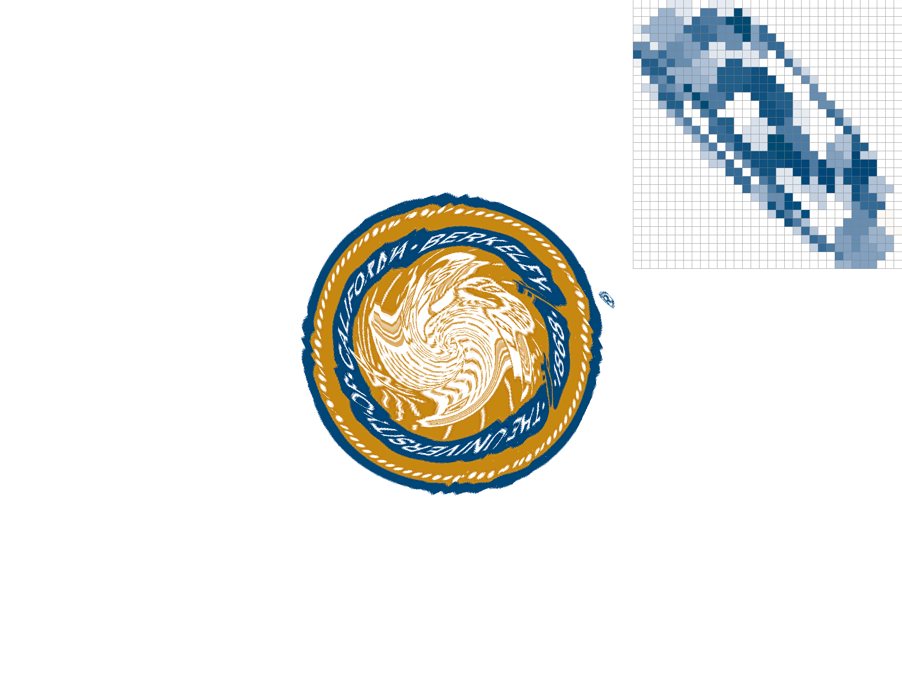

Overview
In this assignment, we implemented a simple rasterizer that covers capabilities including drawing single-color triangles, super-sampling, transforming geometric objects, coloring triangles using Barycentric coordinates, and pixel and level sampling. Essentially, we've explored the process of converting continuous objects and images into discrete formats such as pixels in computer screens. Each of these sampling methods have certain drawbacks and benefits in terms of memory, speed, and anti-aliasing power. Overall, the project opened our eyes to how sensitive the sampling process is. Very small errors/bugs would lead to complete mistakes in the drawing of certain colors in our final results. Additionally, we learned about the importance of being accurate about variable types especially when converting between integers, floats, and doubles. Even small rounding errors can lead to substantial rasterization bugs.
Section I: Rasterization
Part 1: Rasterizing single-color triangles
To rasterize triangles, we implemented RasterizerImp::rasterize_triangle() in
rasterizer.cpp. Following the example algorithm from
lecture 2, we
first calculate the bounding box of the triangle (the smallest rectangle that
contains the triangle), which can be found by calculating the minimum and
maximum x and y coordinates out of the 3 points of the triangle. Doing so
produces 4 values with which we can construct 2 points: (xmin, ymin) and
(xmax, ymax). These are, respectively, the top left and bottom right corners
of the bounding box. From here we can iterate over every pixel within the
bounding box from (xmin, ymin) up to (xmax, ymax), sampling with our
indicator function inside(), which returns whether the sample point is within
the triangle. If inside() returns true, we call fill_pixel() to color the
current pixel. Because we are only iterating over the pixels in the bounding
box of the triangle, our algorithm is no worse than one that checks each sample
within the bounding box of the triangle.
inside() is a helper function that takes in a sample point and all three
points of the triangle. The function performs 3 half plane line tests (with
helper function line_test()) on sample point s for all 3 edges (pairs of
points) of the triangle. Sample point s = (sx, xy) is inside the triangle if
it is on the same side of all three edges of the triangle. In other words, the
point is inside the triangle if and only if all 3 line test products have the
same sign.

|

|

|

|
Part 2: Antialiasing triangles
Why is supersampling useful?
Without supersampling, we can clearly see aliasing in the form of jaggies. For
instance, not only are all edges of the triangles jagged, but the top corner of
the pink triangle in basic/test4.svg is disconnected from the rest of the
shape. This is because the edges of the actual triangle form such a narrow
corner that the sample points in the pixels are not registering as within the
triangle. To fix this, we need antialiasing. Supersampling is one method of
antialiasing that we can us for rasterization.
The following screenshots illustrate the difference antialiasing by supersampling makes. Compare the top corner of the pink triangle in the image with sampling rate of 1 to the images with supersampling.
|
|
|
|
|
|
How we implemented supersampling
The main data structure utilized for supersampling is the sample_buffer, which
is a 1-d vector<Color> containing all samples. The size of the sample_buffer
is width * height * sample_rate. When sample_rate = 1 (no supersampling), the
sample_buffer is the same size as the framebuffer. When sample_rate is changed
by set_sample_rate() the sample_buffer is accordingly scaled by the new sample_rate.
There are three major changes to the rasterization pipeline required to implement
supersampling. The first of which is to actually sample sample_rate times per
pixel when rasterizing triangles in rasterize_triangle(). From Task 1, we iterate
over all the pixels of the bounding box of the triangle, and sample the pixel once.
Now, for every pixel in the bounding box of the triangle, we sample sample_rate
times. In other words, we subdivide each pixel into a sqrt(sample_rate) * sqrt(sample_rate)
grid and sample each subpixel, storing each sample into the sample_buffer,
which is properly scaled by sample_rate. We add two more nested for loops and
iterate i and j from 0 to samples_per_side, where samples_per_side is
sqrt(sample_rate). The offset for each subpixel is j * samples_per_side + i.
We index into sample_buffer with an additional offset for the subpixels/supersamples,
which is just the offset for each subpixel multiplied by the width and height
of the image. Then, the total index into sample_buffer looks like this:
int s = j * samples_per_side + i;
sample_buffer[y * width + x + s * width * height] = color;
Now that we are able to sample many times per pixel and store all samples in sample_buffer,
the second major change is to downsample to the original image resolution. We implemented
this in resolve_to_framebuffer() as this function is called in the last step in
rendering the frame. We resolve our supersamples into the framebuffer by averaging=
the supersamples for one pixel into one Color object. Similarly to how we iterated
over subpixels in rasterize_triangle, we do so here for every pixel, summing
the samples into one Color object. Then that Color object is divided by sample_rate.
Finally, the framebuffer is populated with the RGB values of the Color object.
The third change is to ensure no supersampling/antialiasing occurs for lines and
points. We modify fill_pixel, which is called by rasterize_point and rasterize_line,
to fill all subpixels/supersample points with the same color. This "fills" the pixel
with one color regardless of the sample_rate so that it resolves to a single sampled
pixel in the framebuffer.
Part 3: Transforms

Rotation and translation of both right and left forearms as well as in the left leg were implemented to add movement to the cubeman, "animating" it to look like it was dancing. For example, the left arm was translated 70 units to the left and 20 units ups and rotated 45 degrees to create the effect that the arm was being bent. The translation was added because the rotation itself was not enough to account for bending of the cubeman's limbs, causing the forearm shape to cover other parts of the cubeman's body. The colors on the figure were also added to create a "shading" effect, using Berkeley colors.
Section II: Sampling
Part 4: Barycentric coordinates
svg/basic/test7.svg

What are Barycentric coordinates?
Barycentric coordinates are a coordinate system for triangles (or any simplex),
and they allow us to do fun things like interpolation and checking whether points
are within triangles. When used for triangles, they form a tuple of three values
that are the coefficients of values assigned to the vertices of the triangle.
A point in the triangle is defined by $(x, y) = \alpha{A} + \beta{A} + \gamma{C}$,
where $A$, $B$, and $C$ are the vertices of the triangle. Barycentric
coordinates linearly interpolate values at vertices, and the vertices can be
assigned any value, including colors. More generally, we have $V = \alpha{V_A} +
\beta{V_A} + \gamma{V_C}$. By assigning Color objects to each vertex, we can
interpolate between three colors when sampling points within the triangle using
barycentric coordinates, and that is exactly how we implemented rasterize_interpolated_color_triangle()
in rasterizer.cpp. $\alpha$, $\beta$, and $\gamma$ have closed form solutions
and can be calculated easily with each sample point, used to check if that sample
point is within the triangle, and then in the linear interpolation of the Color
objects assigned to each vertex of the triangle. The result is a smooth gradient/blend
of colors in the triangle.

Similar to the triangle in Lecture 5 Slide 24,
this is just a single triangle with one red, one green, and one blue vertex. The
colors are smoothly blended due to interpolation with barycentric coordinates.
We generated the triangle with svg/task4/triangle.svg:
<?xml version="1.0" encoding="utf-8"?>
<!-- Generator: Adobe Illustrator 16.0.4, SVG Export Plug-In . SVG Version: 6.00 Build 0) -->
<!DOCTYPE svg PUBLIC "-//W3C//DTD SVG 1.1//EN" "http://www.w3.org/Graphics/SVG/1.1/DTD/svg11.dtd">
<svg version="1.1" id="Layer_1" xmlns="http://www.w3.org/2000/svg" xmlns:xlink="http://www.w3.org/1999/xlink" x="0px" y="0px"
width="200.0px" height="200.0px" viewBox="0 0 200 200" enable-background="new 0 0 200 200"
xml:space="preserve">
<colortri points="0 200 100 0 200 200" colors="1 0 0 0 0 0 1 0 0 1 0 0 "/>
</svg>
Part 5: "Pixel sampling" for texture mapping
What is pixel sampling?
Pixel sampling is the process of identifying values (colors, texture samples) from the vicinity of a given point. For the case of this task, we are sampling from the texture space based on values given in screen space.
Implementation
We first implemented RasterizerImp::rasterize_textured_triangle() in
rasterizer.cpp to do something extremely similar to
RasterizerImp::rasterize_interpolated_color_triangle(), except instead of
using barycentric coordinates to linearly interpolate the colors assigned to
each vertex, it does so with the texture space $(u, v)$ coordinates of each
vertex. This results in the texture space $(u, v)$ coordinate for the current
sample point, which we then pass into Texture::sample_nearest() or
Texture::sample_bilinear() depending on the value of psm. Each texture
sampling function returns the Color of pixel in the texture mipmap level,
which is just the zeroth level for Task 5.
Nearest sampling
For nearest sampling, the sample point from the texture space is identified by
taking the floor of the u and v coordinates in texture space and finding
the corresponding texel in the mipmap level level. Flooring both of these
coordinates will return the "nearest" coordinate sample (the texel in which
$(u, v) lies) and ensures we don't miss out the pixels near the origin.
Bilinear sampling
Bilinear sampling is implemented by taking the four nearest sample locations and then performing a total of three linear interpretations to get the final sample value.
To implement this, the corresponding texel coordinate is found, following
similar steps to the one's described above in nearest sampling. Then, similar
to the illustration in Lecture 5, Slide 72, a "middle coordinate" is found by
rounding $(u, v)$ to get the nearest texel coordinate. This places us in the
middle of four coordinates and lets us perform bilinear interpretation between
the four sample points $(round(u) {\displaystyle \pm} .5, round(v)
{\displaystyle \pm} .5)$. We handle edge cases here by detecting when the
initially found coordinate is on the edge of the image. We sample the "middle"
of these four coordinates. Two helper lerps are performed on the top two
coordinates and bottom two coordinates respectively and a final vertical lerp
is performed utilizing the results of the previous two lerps, thus completing
the bilinear sampling.
Differences
| Sampling Rate (samples/pixel) |
Sampling Method | Images |
|---|---|---|
| 1 | nearest |  |
| 1 | bilinear | |
| 16 | nearest |  |
| 16 | bilinear |  |
With 1 sample/second, there is a noticeable difference between different sampling methods. The bilinear, 1 sample/second image has fewer jaggies and the shape is almost discernible. For the results obtained from sampling with 16 samples/second, the image sampled with nearest the gap in quality is less noticeable given that super sampling occurs, but the image obtained with bilinear sampling is has far less aliasing.
The explanation behind this is simply that interpolating more samples will produce a higher quality image rather than just relying on one, "nearest" sample. This is more evident with smaller, higher frequency parts of the image, hence why we chose the small (R) in the Berkeley seal. Going further, the reasoning behind this is when there are parts of the image that are rapidly changing (such as at the edge of an object), taking one, nearest sample typically not capture edge details as well as if you take higher samples and/or interpolate, which is why we can expect the highest quality image with bilinear sampling at 16 samples/second.
Part 6: "Level sampling" with mipmaps for texture mapping
What is level sampling and how did we implement this?
Mipmaps are used as an optimization and, conceptually, are a collection of pre-computed, filtered versions of the texture, with each level representing a select granularity of filtering. Specifically, the 0th level mipmap is the full resolution image/texture. As the level increases, the resolution of the image is decreased by downsampling by a factor of 2 in each dimension. By only storing an extra third of memory for each image/texture, mipmaps help antialias when texture mapping by using level sampling. Level sampling involves calculating the appropriate mipmap level to use based on distance. The greater the distance, the greater the mipmap level should be so that when sampling the texture, the smaller mipmap image won't be undersampled when rasterized to a small part of the screen.
We implemented level sampling by first making sure to call Texture::sample()
in RasterizerImp::rasterize_textured_triangle() and passing in a
SampleParams struct containing the $(u, v)$ barycentric coordinates of $(x,
y)$, $(x + 1, y)$, and $(x, y + 1)$. Then, sample() handles the level sample
method in psm as follows. When lsm == L_ZERO, we sample with level = 0.
When psm == L_NEAREST, we calculate the level with get_level() and round it
to get the nearest level. And when lsm == L_LINEAR, we calculate the level
as a continuous value, floor it to get the adjacent level below, and ceil
it to get the level above. With these two levels, we sample the texture twice
and linear interpolate between the two colors for the final color of the sample.
Tradeoffs
Speed and memory
With level sampling or mipmapping, we have generally improved speed and memory usage because the full quality of a texture need not be fully loaded to render every object on a scene. Objects in the "background" don't need the full quality of the texture because they require less detail to be rendered without too much aliasing and so "smaller" versions of a texture for distant objects minimizes the need to load a full-size version of a texture. On the other hand pixel sampling requires loading a full texel each time. Additionally, because of the design of mipmaps, there's less texture data that needs to be store. Increasing the number of samples will increases the amount of computation quadratically and this is reflected in both speed and memory.
Aliasing
The calculation of the "distance" of two points in texture space and the corresponding mipmap level in level sampling reduces aliasing by smoothing out jaggies from the image. Selectively choosing, say, a lower-frequency versus higher-frequency mipmap level will remove aliasing/smooth out our jaggies. Of course, increasing the number of samples will generally decrease the amount of aliasing, but at the cost of speed and memory as mentioned above.
| Combination | Image |
|---|---|
L_ZERO AND P_NEAREST |
 |
L_ZERO AND P_LINEAR |
 |
L_NEAREST AND P_NEAREST |
 |
L_NEAREST AND P_LINEAR |
 |
Section III: Art Competition
If you are not participating in the optional art competition, don't worry about this section!


{kind=link}
{kind=link}